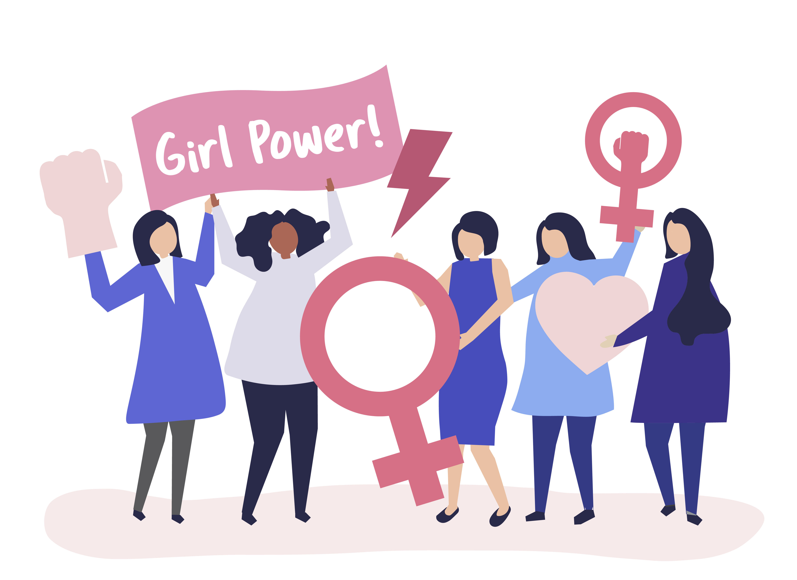

Target Beneficiaries
- Marginalized and underserved communities
- Survivors of domestic violence
- Women seeking economic opportunities
- Young girls in need of reproductive health education
- Women requiring literacy and skill development support

Geographic Focus
Primary operations in Tamil Nadu — with active programs in Chennai, Coimbatore, Madurai, and rural belts of the state.
Expansion initiatives planned for select districts in Andhra Pradesh, Karnataka, and Telangana by 2026.